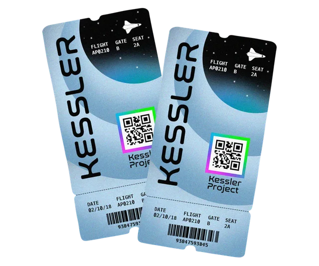
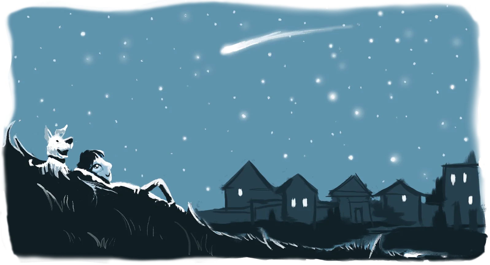
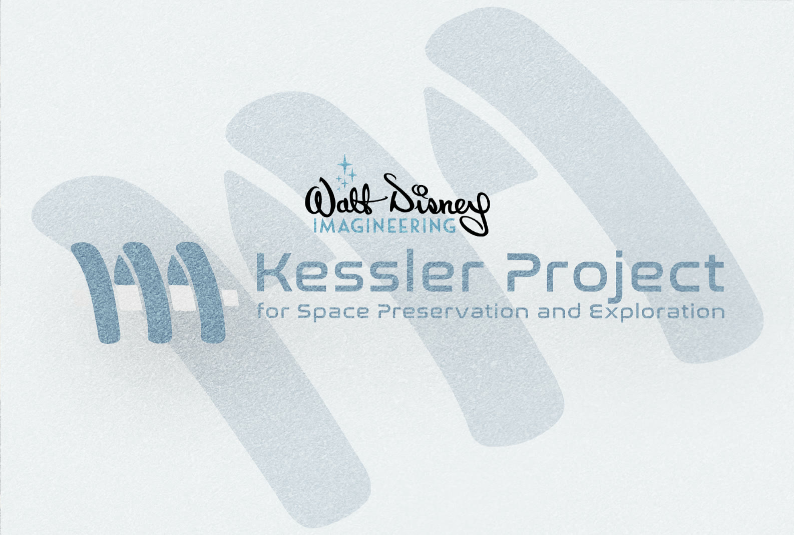
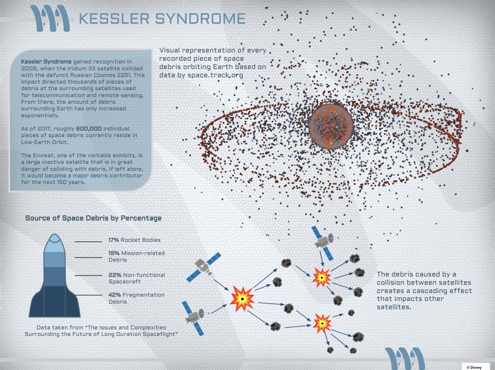
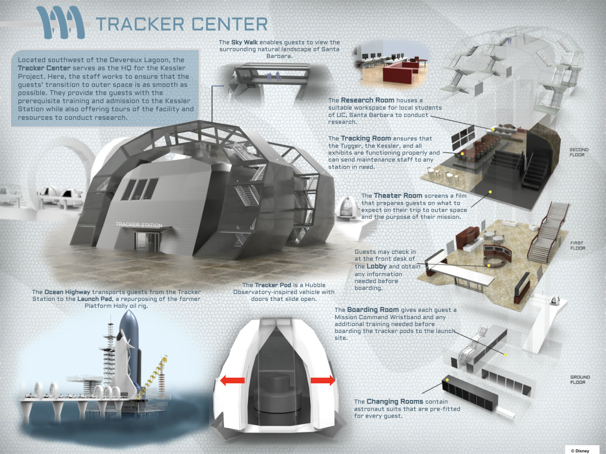
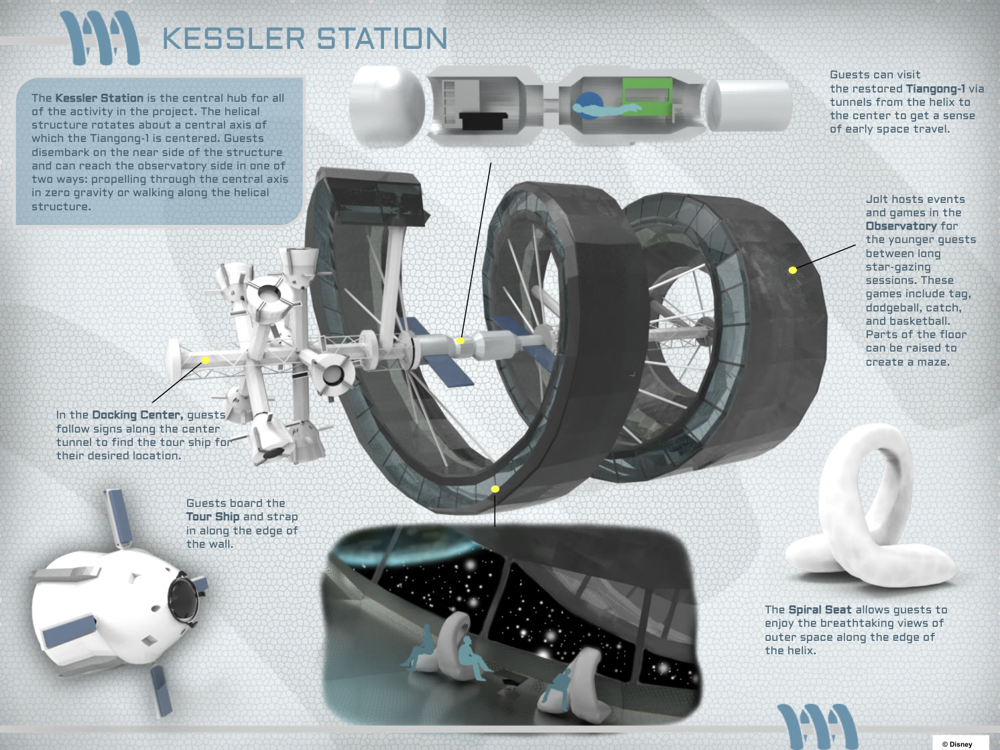
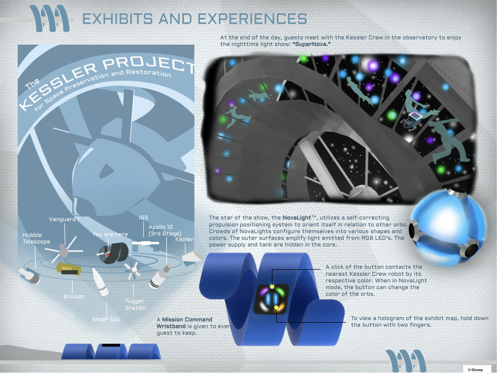
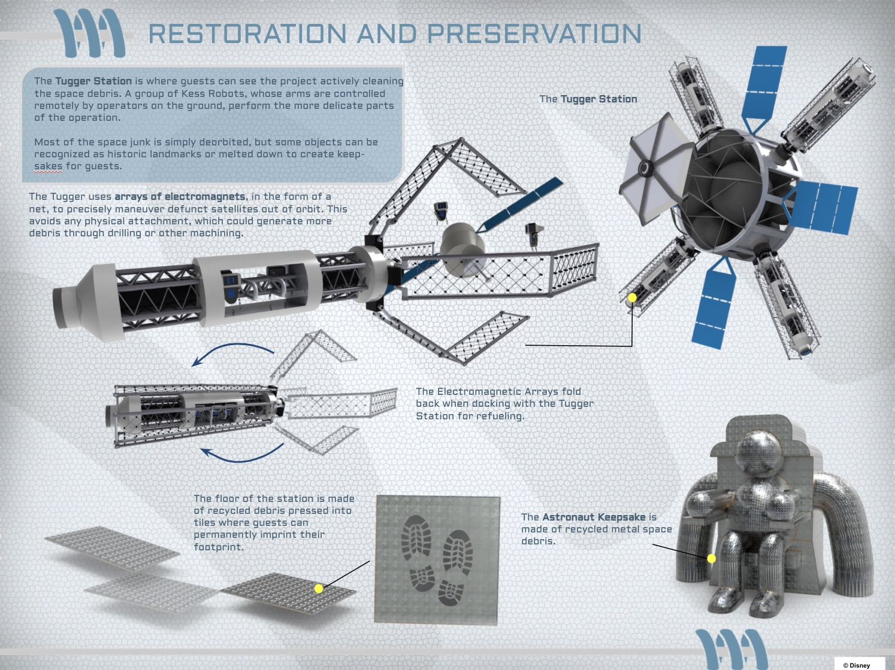
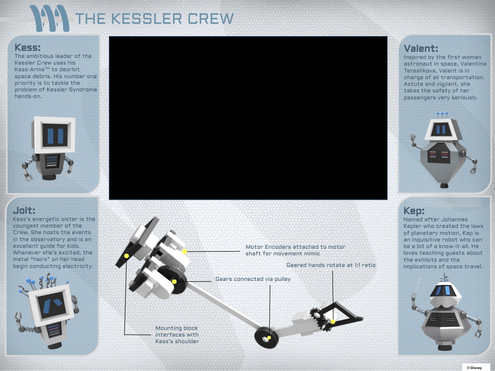

Art direction, design, 3D modeling, illustration
Disney Imaginations Finalist: Kessler Project
Submission slides, illustrations, and branded assets for a space-themed park experience, created for the 2018 Disney Imaginations competition. Selected as one of six finalists.
Article in The Philadelphia Inquirer ↗








More work
All design